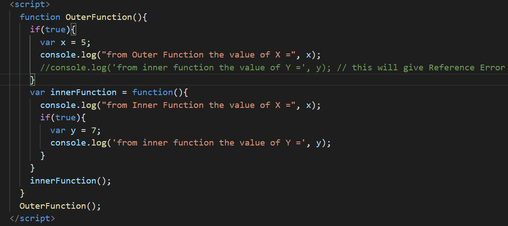

First thing JavaScript has lexical scoping with function scope. In other words, even though JavaScript looks like it should have block level scope because it uses curly braces { }, a new scope is created only when you create a new function.

In this example, the variable x is available everywhere inside of outerFunction(). Also, the variable y is available everywhere within the nestedFunction(), but neither are available outside of the function where they were defined. The reason for this can be explained by lexical scoping. The scope of variables is defined by their position in source code. In order to resolve variables, JavaScript starts at the innermost scope and searches outwards until it finds the variable it was looking for.
Lexical scoping is nice, because we can easily figure out what the value of a variable will be by looking at the code; whereas in dynamic scoping, the meaning of a variable can change at runtime, making it more difficult.